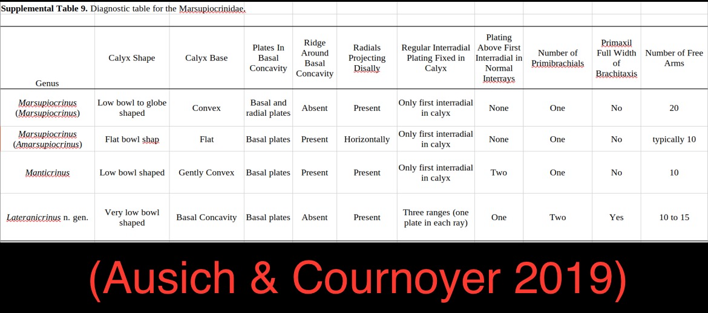
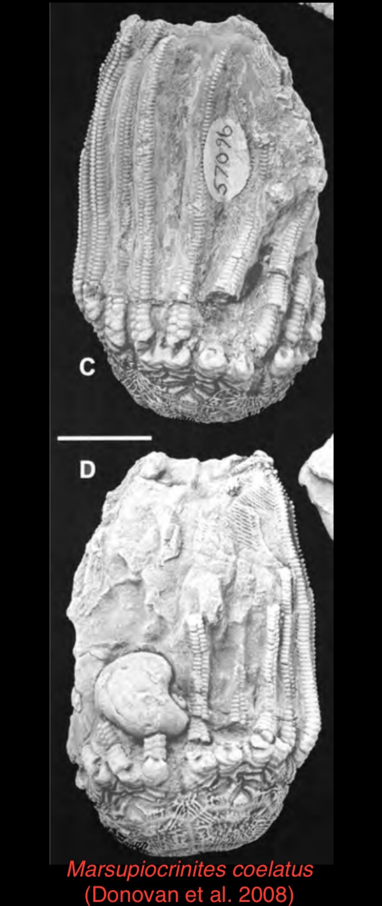
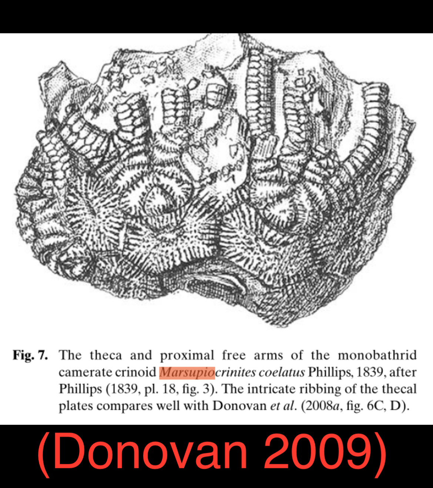
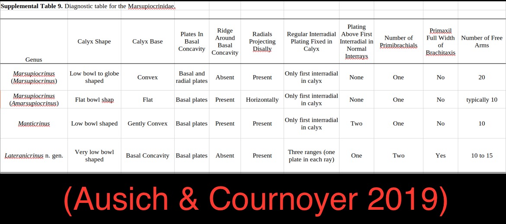
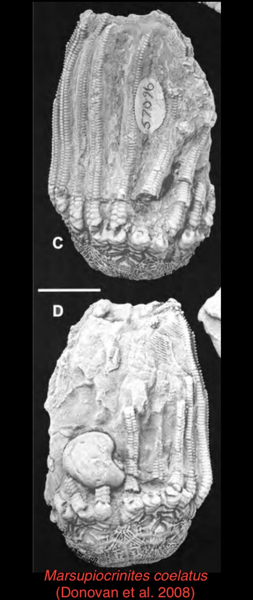
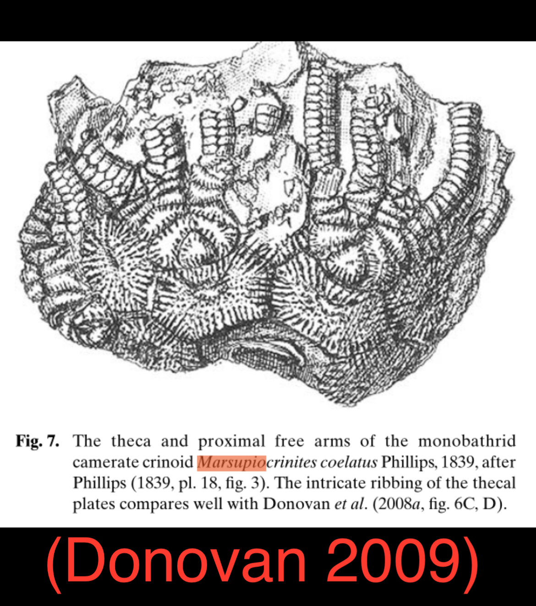

n. gen., n. sp., Marsupiocrinid
• Silurian
• Much Wenlock Limestone Formation
• Wren's Nest, Dudley, UK
Size: 3.3 cm crown
This crinoid exhibits features of the family Marsupiocrinidae (Ausich & Cournoyer 2019) but is clearly distinct from Marsupiocrinites coelatus, the only Marsupiocrinid described from Dudley (Phillips 1839, Donovan et al. 2008, Donovan 2009).
Three key differences are:
1. Three arms per ray (due to asymmetrically branching secundibrachials) resulting in 15 biserial arms, as opposed to four arms per ray and 20 biserial arms which M. coelatus is invariably described to have.
2. A significant basal concavity as opposed to the flat base in M. coelatus.
3. Lack of the radiating ridge calyx ornamentation seen in M. coelatus.
Another apparently conspecific specimen in the collection of Michael Lask also shares all of these features, which makes it unlikely that these are simply one-off variations/mutations from M. coelatus.
Moreover, this crinoid is not consistent with any one of the currently recognized Marsupiocrinid genera, but rather possesses a unique combination of features from among them (Ausich & Cournoyer 2019). Assuming these sources are exhaustive, this crinoid appears to be undescribed from Dudley and perhaps of a new/undescribed genus entirely.
Addendum: William Ausich agrees with my assessment of this crinoid.


 
